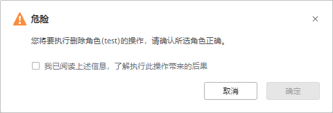
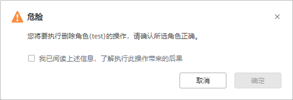

本产品支持删除已有的角色信息。
注意事项
内置角色和已关联用户的角色不支持删除。
操作步骤
- 选择“系统 > 安全 > RBAC > 角色”。
- （可选）可以单击“名称”旁的
 ，对角色进行搜索。
，对角色进行搜索。 - 单击需要删除的角色所在行右侧的“更多 > 删除”。
支持批量删除角色，勾选多个需要删除的角色，单击“删除”。
- 在弹出的对话框中，勾选“我已阅读上述信息，了解执行此操作带来的后果“，单击“确定”。

本产品支持删除已有的角色信息。
内置角色和已关联用户的角色不支持删除。
，对角色进行搜索。支持批量删除角色，勾选多个需要删除的角色，单击“删除”。
